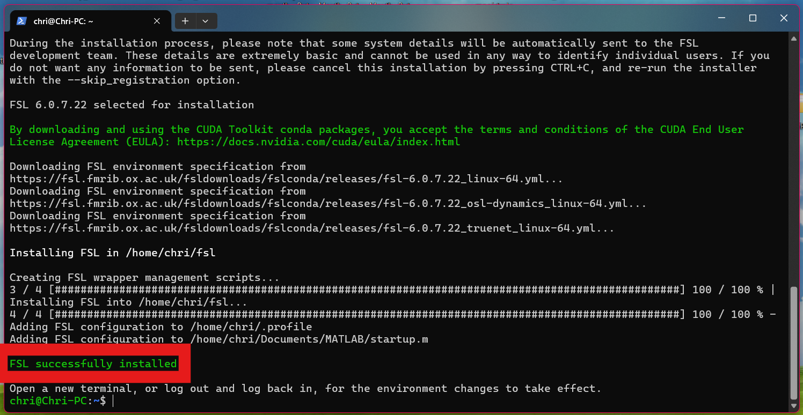

FSL (FMRIB Software Library) è una libreria fondamentale per l'analisi dei dati di risonanza magnetica. Fortunatamente, la procedura di installazione è la stessa sia per chi usa WSL (Windows) sia per chi usa macOS!
Copia l'intero comando qui sotto, incollalo nel tuo terminale e premi Invio:
cd ~ && curl -Ls https://fsl.fmrib.ox.ac.uk/fsldownloads/fslconda/releases/getfsl.sh | sh -sOra ci vuole pazienza. Lo script scaricherà e installerà tutto il necessario. Se hai una connessione veloce ci vorranno circa 10-15 minuti, altrimenti potrebbe volerci di più. Il terminale mostrerà l'avanzamento dell'installazione.
Leggi attentamente l'output finale. Se tutto è andato a buon fine, vedrai questo messaggio:
FSL successfully installed
fsl_installation_<data>.log (dove <data> è la data odierna).🎉 Ottimo lavoro! FSL è ora installato sul tuo sistema.
Procedi per installare Miniconda e Jupyter →